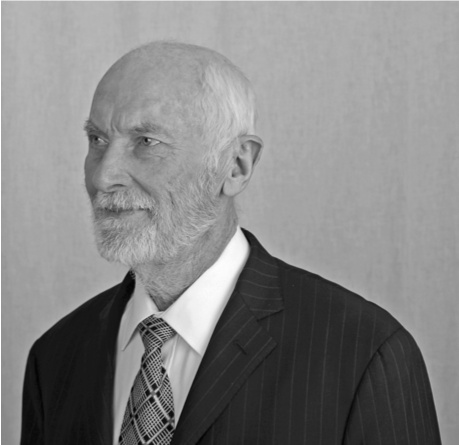
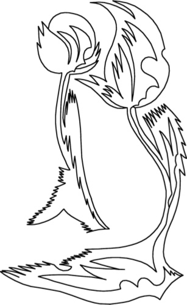

Страницы авторов "Тёмного леса"
Литературный Кисловодск и окрестности
Пишите нам! temnyjles@narod.ru
Поступила 27 марта 2011 г.
Представлено членом редколлегии В.И. Старостенко

Научная биография автора была опубликована пять лет назад [Игорю ..., 2006]. Здесь она будет расширена, дополнена личностными деталями, а также неформальными соображениями и оценками автора.
Родословная. Моя мать - русская из Твери, отец - украинец с Сумщины, поэтому я всем нутром за сближение и объединение с Россией. Моя родословная прослежена на 3 поколения.
Прадед по матери, Яржемский Ипполит Яковлевич (1834-1876), был военным, прошедшим путь от младших чинов до полковника. Сохранились витиеватые царские грамоты о пожаловании очередных чинов и его трогательные почтительные письма супруге Глафире Петровне, моей прабабушке. В 30 лет она стала вдовой с 4 детьми и посвятила себя их воспитанию. Мой дед, Яков Ипполитович Яржемский (1869-1941), был творчески одаренным (рисовал, пел, играл на сцене, составил пособие-словарь как писать стихи...). После революции перебивался случайными заработками в Москве, Твери, Саратове и последние 15 лет в Вышнем Волочке, где безуспешно пытался учить меня дошкольника музыке. Бабушка, Мария Александровна, пережила деда на 1 год. Мое детство прошло в Вышнем Волочке и я хорошо помню дедушку и бабушку по матери.
Моя мать, Яржемская Елена Яковлевна (1907-1975), в 17 лет начала преподавать в сельской школе и сохранила надолго воспоминания о страхах, которые испытывала по пути из школы, проходя через зимний темный лес. В 1926 г. поступила в Ленинградский университет на физико-математический факультет и в 1930 г. закончила его по специальности биохимия. В 1928 г. она познакомилась с моим будущим отцом и в 1929 г. они поженились. Мама работала по нефтехимии, в 1949 г. защитила кандидатскую диссертацию, преподавала биохимию в Педиатрическом институте, в 1960 г. начала терять зрение и ушла на пенсию.
Бабушку и дедушку по отцу я никогда не видел, но их и прадедов имена мне известны. Все были казацкого сословия. Жили в небольшом хуторе Рокитяны в сельской глубинке между Конотопом и Ромнами. У деда, Василия Ивановича, было 9 детей, мой отец, Рокитянский Иван Васильевич (1901 -1987) был шестым. Семья жила в небольшой двухкомнатной избе из самана. Зимой отапливали соломой и стеблями подсолнечника и кукурузы только одну комнату, где и жили. Занимались хлеборобством, жили бедно, хотя семья была дружная и трудолюбивая. Дед был очень набожный, а отец стал атеистом. При коллективизации хутор был разрушен, а жители переселены в с. Хустянка. Отец учился и работал в Хустянке, Смелом, Ромнах, Харькове и в 1926 г. был направлен в Ленинградский университет, который закончил в 1930 г. по специальности биохимия. В дальнейшем работал над созданием синтетического каучука, в 1946 г. защитил кандидатскую диссертацию.
Детство. Родился в Ленинграде 10 июля 1931 г. В девять месяцев был отправлен в Вышний Волочек на Зеленую улицу к бабушке и дедушке Яржемским, с которыми прожил до 5-летнего возраста. Счастливые годы, вольница. Утром выпивал кружку какао, выпрыгивал в окно и целые дни гонял по улице с хорошими друзьями из соседних домов. Дедушка старался привить мне интерес к искусству и музыке. Неприятных событий запомнил два. В 2 года попал со взрослыми на большое водохранилище, зашел по колено, наклонился и вдохнул в себя воду. Еле откашлялся. После этого появилась водобоязнь (хотя я "Рак"), преодолеть которую и научиться плавать удалось только в 9 лет. Во дворе у нас была большая цепная собака. Я дружил с ней и сотни раз проходил около нее. Мне было года 4 или 5, когда мне купили новое пальто. Я радостно выбежал в нем во двор. Собака не узнала меня, яростно набросилась и покусала. После этого надолго сохранилась неприязнь к собакам. С 5 до 10 лет зимой я жил с работающими родителями в Ленинграде, летом наслаждался "вольницей" в Вышнем Волочке. В Ленинграде меня водили в детский садик, о котором конкретных воспоминаний не сохранилось: что-то темное, тягостное, очень неприятное. Родители прошли со мной материал 1-го класса и сразу отдали во второй класс, где я был самым младшим. Учеба во 2-м и 3-м классе не сохранилась в памяти. У родителей было много друзей и мы к ним ходили в гости, где я весело играл со сверстниками и нас вкусно угощали. Из летних событий особенно ярко помню преодоление водобоязни. Чистая речка, берег с круто уходящим на глубину дном, узкий рыбацкий мосток длиной метров 6. Плавать еще не умею. Захожу на мосток и ныряю к берегу, следующие разы захожу все дальше и, наконец, осваиваю ныряние с дальнего края мостка. Восторг от содеянного чувствую и сейчас.
Война застала меня в Вышнем Волочке. Мама приехала за мной и повезла в Ленинград. Железнодорожный мост близ станции Бологое немцы разбомбили и пришлось 10 км идти пешком. В сентябре 1941 г. нас эвакуировали через Москву в Казань. Ехали в товарном вагоне-"теплушке" около недели, два дня проезжали Москву. Немцы ее усиленно бомбили, периодически сирены гудели "воздушную тревогу", мы из теплушки не выходили и наблюдали трассирующие снаряды зениток, зарева многочисленных пожаров и несколько дымных падений сбитых самолетов. В Казани родители по 12 ч работали на военном производстве, я учился в школе и вел значительную долю домашних дел. Учился легко и кое-как. Совершал многокилометровые походы в пригороды за щавелем, грибами и ягодами, большие заплывы по озерам и Волге, был период увлечения азартными играми, картами в очко, буру, где проигрывались и выигрывались "состояния" из марок, монет и других мальчишеских ценностей.
В 1945 г. вернулись в Ленинград. Весной 1946 г. наткнулся на объявление "Открытие летнего сезона в яхт-клубе ВЦСПС. Катание гостей на яхтах". Я туда и сразу из гостя превратился в завсегдатая. Изучил узлы, правила движения и гонок, через 2 месяца получил права рулевого и стал гонщиком швертбота М-20, а на следующий год назначили капитаном килевой яхты. В яхт-клубе был не менее 6 раз в неделю, включая зиму, когда с яхт переходили на буера, а в межсезонье занимались ремонтом: суда были старые деревянные и требовали ухода. Мы чувствовали себя настоящими моряками, в душе звучала песня "Только в море, только в море, безусловно это так. Только в море, только в море может счастлив быть моряк". Пароходы мы презирали и мечтали бороздить океаны под парусом. Управление яхтой доставляло огромное удовольствие, у меня развилось чутье ветра, я чувствовал приближение шквалов и всегда мог оптимально противостоять им. В 1947 г. стал чемпионом Ленинграда среди юношей. В школе перебивался с троек на четверки. Приближался 10-й класс, и родителей беспокоило мое будущее. Вели со мной "душеспасительные" беседы. Не помогало. Тогда моя мама пошла к директору яхт-клуба и попросила ограничить мои посещения 1 днем в неделю. Повозмущавшись, я вплотную взялся за учебу. Школа и учителя были хорошие, учился с интересом. Послали на математическую олимпиаду, и я попал в число победителей. Учителя стали тянуть меня на медаль, заставили пересдать предметы 9-го класса, которые шли в аттестат. Медаль получена. Куда поступать? Давно наметил в мореходку.
Родители, все родственники и знакомые отговаривали. Поддаюсь: во-первых, моряки уже почти не ходят под парусом, во-вторых, мне нравится физика, и я поступаю на физический факультет. А мой лучший друг с 4-го класса, весельчак Юрка Ребристый, не увлекавшийся парусом, идет в мореходку и после окончания плавает 10 лет по Баренцеву морю в ожидании загран-визы, а получив ее, выходит в океан. Во время Карибского кризиса уже капитаном он возит вооружение на Кубу, американские самолеты непрерывно совершают облеты, чуть не задевая мачты корабля. В результате малоподвижного образа жизни в плаваниях Юрка сильно растолстел, проблемы с сердцем и примерно в 55 лет умирает от сердечного приступа на капитанском мостике в Индийском океане.
Университет. Физика меня интересовала, лекторы и преподаватели были хорошие. Я аккуратно записывал лекции и по ним во время сессии тщательно готовился к экзаменам, стараясь во всех вопросах досконально разобраться. Днем занимался один, потом встречался со своим другом Андреем Жиглинским. Мы консультировали друг друга по недопонятым проблемам, и на экзаменах не было вопросов, на которые мы не могли ответить. На первых двух курсах я был в группе оптики и добровольно принимал участие (без оплаты) в научных экспериментах. Мне доверили работать с дорогим (3000 руб. = 5000 $) инфракрасным излучателем и, непонятно как, он у меня сгорел. Его списали, а я из научной лаборатории ушел.
Самым ярким впечатлением университетских лет была стройка колхозной ГЭС в северной глубинке, на которую желающие добровольно ездили во время летних каникул по призыву комсомола. Наша бригада прокладывала линию электропередач. Все делали сами. В лесу выбирали стройные сосны, вручную спиливали, топором обрубали ветви, перетаскивали к месту установки, вкручивали изоляторы и ставили в подготовленные ямы. Подъем столба был одной из трудных и опасных операций. Мой высокий рост имел преимущество при подъеме и я старался изо всех сил, за что ребята в шутку прозвали меня "бригадная моща", вкладывая двойной смысл (я был очень тощий). Друзья по бригаде остались на всю жизнь.
После второго курса я в поисках приключений в одиночку устроился техником в экспедицию ВСЕГЕИ. Два месяца хорошо отработал на геофизических приборах в горах Тувы и к началу сентября собирался на занятия. Начальство не отпускает (не хватало техников), не дает машину. И я ушел с гор пешком и на перекладных, недополучив зарплату. В университете перешел в группу геофизики. После третьего курса - геофизическая практика в поле. В середине 4-го курса "вдруг" увидел Никифорову Делли - веселую девушку в окружении трех веселых сокурсников. Мы учились вместе с 1-го курса, но я ее не замечал и вдруг как "с первого взгляда". В начале 5-го курса мы поженились и прожили 53 года, хотя, как я узнал намного позже, сочетание Рак - Козерог самое неблагоприятное. И действительно, трудности взаимоотношений бывали, но положительные эмоции существенно преобладали. После четвертого курса два месяца военных лагерей и получение офицерского звания. На пятом курсе дипломная работа, включавшая изготовление аппаратуры и эксперимент.
Институт физики Земли АН СССР. Пять человек из нашего выпуска были распределены в Институт Физики Земли (ИФЗ) АН СССР в аспирантуру. Моим руководителем был выдающийся математик (теория регуляризации...) и геофизик (магнитотеллурическое зондирование (МТЗ)...) академик Андрей Николаевич Тихонов. Но я хотел вести экспериментальную работу и перешел к проф. Александру Игнатьевичу Заборовскому, который предложил мне на выбор 5 экспериментальных тем по электрическим методам. Полтора года ушло на экзамены и выбор темы, затем сделал измерительную аппаратуру, договорился работать в лаборатории химфака МГУ, где готовил химически чистые, специально обработанные образцы песка. Полгода вел измерения и вдруг обнаружил, что моя аппаратура пишет собственные процессы, а не вызванную поляризацию. За месяц разобрался с аппаратурой, затем за три месяца заново провел все измерения и в последующие три месяца написал диссертацию за два месяца до окончания срока аспирантуры 31 октября 1956 г. И тут выходит постановление - до защиты нужно опубликовать основные результаты. За 2 недели готовлю большую статью и "Известия АН СССР, серия геофизическая". Ее опубликовали через 4 месяца (обычно 1,5 года). 17 мая 1957 г. защитил кандидатскую диссертацию на тему "Вызванная поляризация ионопроводящих пород". В ИФЗ эта тема не вписывалась, продолжать ее официально я не мог и вообще устроиться в Москве не стремился.
В 1957 г. начинался Международный геофизический год (МГГ). Послевоенный мир активно развивал исследования планеты. Нужны были кадры. Валерия Алексеевна Троицкая предложила мне на выбор три места для организации наблюдений земных токов: Камчатка, Бакуриани и Алушта. Тянуло на Камчатку, но у жены был туберкулез и выбрали Алушту. Регистрацию земных токов и магнитного поля освоили легко и оставалось много времени. Хотел продолжать исследования и по вызванной поляризации. Денег на науку тогда не жалели. Я самостоятельно за экспедиционные средства почти построил небольшой спецпавильон с вытяжным шкафом, но тут на Черное море приехал грозный главбух ИФЗ и обнаружил у меня нецелевое расходование средств. Я искренне возмущался, что мне не дают продолжать эту интереснейшую тему - вызванную поляризацию. Видя мою наивность, меня сильно не наказывали: просто сняли с должности начальника отряда, отряд упразднили и нашу электромагнитную (ЕМ) группу подчинили начальнику сейсмостанции. Моя следующая инициатива - изучение морских токов. Для этого требовались кабель, буи, гальванометры, аренда катера. Это вписывалось в тематику и было выполнено. Результаты измерений вылились позже в пионерскую работу о береговом эффекте (1963). Кроме морских работ летом много ходил по горам и плавал в море, занимался подводной охотой с самодельными маской и копьем, без добычи не возвращался. Зимой я оставался наедине с записями земных электрических токов и магнитного поля, анализировал их и эмпирически вывел закономерности магнитотеллурики. Так я вошел в магнитотеллурику "снизу", от наблюдательного материала. Через год я ознакомился с теоретическими работами А.Н. Тихонова, Д.Н. Четаева, М.Н. Бердичевского и написал статью "О применении магнитотеллурического метода на анизотропном и неоднородном массивах" (1961). Работа не учитывала фазовых соотношений, но по анализу и учету неоднородностей была пионерской, ее перевели на английский и включили в сборник под редакцией проф. Возоффа. Я много размышлял над иронией судьбы: если бы я остался в аспирантуре у Тихонова и выбрал тему МТЗ, я мог бы стать ведущим теоретиком метода (а я "потерял" четыре года на вызванную поляризацию). Так я думал, а сейчас сомневаюсь. Наверное, теория формул - это не мое. Я выводил и приводил формулы в статьях и монографиях, но делал это медленно и с трудом. Я знаю многих, кто владеет формулами с легкостью, выводя их прямо на доске перед аудиторией слушателей. Особенно великолепны в этом Владимир Николаевич Страхов и покойный Анатолий Аркадьевич Гроза. Я же могу работать с формулами только в уединенной тишине. Анализируя же экспериментальные данные, я интуитивно чувствую сложность природного явления, мысль направлена на поиск основных закономерностей, формирующих наблюдаемое явление, на поиск их физической сущности. И это помогает находить правильное решение нетривиальных проблем, иногда прямо "у доски" при обсуждении новых данных наблюдений.
Один пример. Теоретики МТЗ поручали своим сотрудникам выполнять глубинные МТЗ в разных местах Земли и появились публикации: в одном месте глубина до проводящего основания мантии Земли 80 км, в другом - 400, в третьем - 1000, подобные результаты стали получаться и в близко расположенных пунктах. После "перелопачивания" своих крымских наблюдений я, наверное, смог бы объяснить эти результаты в 1960 г., но они появились позже. Обстоятельное физическое объяснение результатов глубинного МТЗ и набор способов как их исправить были доложены мною на Всесоюзной конференции в Новосибирске в 1968 г., опубликованы в 1970- 1971 гг., но и сейчас мало что можно добавить к этим работам. Тогда их приняли в штыки, в 1975 г. появилась независимо подобная работа на западе и в 1976 г. повторена (бывшими критиками, причем без ссылки) в СССР.
В Крыму я еще не понимал значение этих работ, научного общения никакого, библиотека скудная. Ежегодные 2-3 короткие командировки в Москву не спасали положения. Чувствовал, что "варюсь в собственном соку", появились сомнения в своей научной дееспособности. И хотя жизнь в Крыму была прекрасна: море, горы, свой дом с садом, я попросил перевести меня на Центральную обсерваторию "Борок", где велась интенсивная научная работа по анализу уникальных новых данных, полученных во время МГГ и Года спокойного Солнца, а в последующие годы - на обсерваториях СССР и зарубежья.
Борок Ярославской, 300 км от Москвы. Руководила работами Валерия Алексеевна Троицкая. Она родилась 7 ноября 1917 г., после войны у нее родились двойняшки Петя и Катя, и ей пришлось три года просидеть с ними дома. За это время она самостоятельно выучила английский, французский и немецкий языки так, что свободно говорила на них. В 1950 г. поступила в аспирантуру к А.Н. Тихонову и защитила диссертацию на тему "Короткопериодные колебания (КПК) естественного электромагнитного поля по записям земных токов". Когда начался МГГ, ей поручили анализ и интерпретацию записей всех обсерваторий. Работа очень трудоемкая - проанализировать вручную многие километры сложных осциллограмм. В Москве это было организовать очень трудно. И она организовала работу в Борке. Набрала 5-7 молодых м.н.с., москвичей и ленинградцев, более 10 техников из местных девчат, сама проводила в Борке более трети времени. Ее приезд был праздником, она всех заражала научным энтузиазмом, скучные осциллограммы "оживали". Она сделала два официально зарегистрированных открытия - открыла неизвестные ранее колебания: "жемчужины" и КУПы (колебания убывающего периода, возникающие при сжатии магнитосферы солнечным ветром), опередив зарубежных ученых. Троицкая была типичным гуманитарием, но достойно носила звание д-ра физ.-мат. наук. Не вступая в партию, она стала самым выездным ученым благодаря знанию языков и умению достойно представлять советскую науку. Она была первой женщиной в мире, опустившейся в батискафе на глубину 3 км в обществе 2 французов. В 1970-е она 4 года успешно возглавляла МАГА (Международную ассоциацию геомагнетизма и аэрономии).
В 1960 г. мы с женой Делли и пятилетним сыном переехали в Борок (получили квартиру, быт был налажен) и влились в научный коллектив. Делли в компании с Троицкой и другими дважды получила великолепные грамоты ИФЗ и премии за лучшие исследования. Троицкая высоко ценила Делли за добросовестную работу и душевную чистоту. Я подобных грамот не получал, хотя участвовал в пяти коллективных работах и столько же имел единоличных работ по тематике КПК. Но главным научным интересом у меня было МТЗ и береговой эффект, по ним я опубликовал за 5 лет в Борке тоже около 5 работ. Участвовал в экспедициях, в частности по регистрации ядерных взрывов. На Камчатке записал ЕМ-отклик на американское испытание на одном из Тихоокеанских атоллов. Под Семипалатинском поставил аппаратуру в 7 км от подземного ядерного взрыва. При толчке земля резко ушла из-под ног и мгновенно вернулась, приборы записали механику, а не ЕМ. И самая интересная поездка - Куба.
Куба. Необходимо организовать геофизические наблюдения на Кубе под носом у США. Посылают сейсмолога, магнитолога и специалиста по земным токам. Последним оказался я. Троицкая сделала этот выбор за четыре месяца до выезда. За это время я с нуля начал учить испанский язык и продолжал учить на Кубе уже практически. Задача командировки была ответственная: найти подходящее место, удобное для обслуживания и свободное от помех, сделать пробные записи на обсерваторской аппаратуре, установить обсерваторию и обучить работе на аппаратуре и обработке полученных записей кубинцев, не имеющих должного образования. В поисках места объездил пол-Кубы, включая Гавану, Сант-Яго и в прошлом пиратский остров Пинос. В городах и пригородах - помехи. На Пиносе чистейшее ЕМ-поле, но на берегу ряды колючей проволоки против ожидавшегося американского вторжения, нет электричества и воды, отели загажены. По бытовым условиям сочли установку невозможной. Искали даже с вертолета. Сейсмики и магнитчики нашли места в окрестностях Гаваны, но электрические помехи были там слишком сильны. В конце концов, нашли место в знаменитом орхидеарии в 150 км от Гаваны, оборудовали обсерваторию и начали регистрацию. Самым трудным оказалось обучение. Молодежь военизирована, сегодня здесь, завтра на другом задании. Нас командировали на четыре месяца, кубинцы официально просили советские органы продлить нам командировки, мне на месяц (дольше я не соглашался, так как жена ждала второго ребенка), сейсмологу на 6 месяцев. Работаем. Через 25 дней возвращаюсь в Союз и оказываюсь злостным нарушителем дисциплины - не возвратился в срок. Становлюсь "невыездным", хотя планировалось, что я буду курировать Кубу и в последующие годы. А сейсмолог через 1,5 месяца получил продление и вернулся незапятнанным. Апеллировать в "соответствующие" органы было бесполезно.
Поездка на Кубу была изумительна. Праздник 3-й годовщины Кубинской революции. Рядами по 100 человек, взявшись за руки, вливаемся на площадь Хосе Марти. Собиралось около миллиона. Все полны революционного энтузиазма. Фидель Кастро 4 часа произносит пламенную речь. Советская делегация под трибуной, в 5 м от Фиделя. К нам спускается всеобщий любимец министр промышленности Эрнесто Че Гевара, излучая доброту и мужественность. Меня представляют, короткая беседа на испанском, рукопожатие. Помню как сейчас. Потом 3 недели великолепного кубинского карнавала. И каждые выходные плавание в море по 3-4 часа в маске и ластах пока не замерзну в воде (27-28°C). Чтобы не обгорела спина, плаваю в футболке, на поясе мешок или сетка для раковин, кораллов, лангустов и нож для бодрости. Полно ядовитых мурен и зубастых барракуд. Последние до 1,5 метров в длину иногда стаей кружат вокруг меня, тогда достаю из ножен нож и направляю на ближайших рыб - это придает бодрости. В бесполезности ножа я убедился при встрече с большой акулой. Я плыл в полукилометре от берега над коралловым рифом глубиной метра 3 недалеко от его края, за которым темно-синяя глубина превышала 25 м. Вдруг передо мной метрах в 3-4 появилась огромная акулья морда диаметром 60-70 см. Длину я не видел. Секунды 2 мы смотрели друг на друга. Я не успел ни испугаться, ни потянуться за ножом, как она молниеносно развернулась, так быстро, что я не разглядел ее длины, и исчезла в глубине. Меня больше всего поразила ее быстрота. Я бы и пальцем не успел пошевельнуть, вздумай она напасть. Возможно, ее испугала моя желтая рубашка с нарисованной на груди страшной мордой. Когда мы были в Сант-Яго и на Пиносе, президент Кубинской Академии команданте Антонио Нуньес Хименес запретил мне плавать без сопровождения вооруженных кубинских подводников. Там было много акул. В других местах я плавал в одиночку (не было компаньона), но воздерживался от подводной охоты, чтобы кровь не привлекала акул. Я приучился пить крепчайший кубинский кофе, который кубинцы пьют каждый час. Фрукты и изумительно приготовленные соки и коктейли, огромные бифштексы из ароматнейшего мяса морских черепах. Но главное впечатление произвели кубинцы и особенно их неподдельный революционный энтузиазм. Тогда он еще раз убедил меня в правильности социалистического выбора. Через 30 лет я пролетом побывал в аэропорту Гаваны: ни прежнего кофе, ни прежнего энтузиазма не увидел. И последнее о Кубе. В Академии проходила научная сессия в честь советской делегации. Все выступали с переводчиками и только я произнес свою речь по-испански, без бумажки и почти экспромтом, чем сорвал восторженные аплодисменты кубинцев. Я был этим весьма горд, особенно потому, что языки мне даются с трудом. Вернувшись с Кубы, я безбожно путал испанский с английским, не мог толком говорить по-английски, пока достаточно не забыл испанский. Жаль, испанский язык очень красивый.
В ИФЗ после смерти Гамбурцева директором назначили академика Михаила Александровича Садовского, специалиста по физике взрыва. Раньше в ИФЗ каждый ученый сам выбирал тематику своих исследований. Садовский потребовал от всех отделов активно участвовать в работах по прогнозу землетрясений (ЗТ). Коснулось это и Отдела Троицкой. Но Троицкая увлеченно занималась исследованием пульсаций, причем к обсерваторским данным добавился быстро растущий вал спутниковой информации, сулящий новые открытия. Все были заняты. А я занимался пульсациями, больше внимания уделяя какому-то МТЗ. И Троицкая решила поручить ЕМ прогноз землетрясений мне. ИФЗ имел и развертывал новые сейсмопрогностические полигоны во всех республиках - Средней Азии, на Кавказе, Камчатке, Байкальском регионе. Материала и возможностей было много. Я попросил Троицкую послать меня ознакомиться с работами в среднеазиатском регионе. Два месяца ознакамливался и участвовал в полевых работах Барсукова Олега Михайловича, набегался по великолепным горам. Однако пришел к выводу, что не хочу этим заниматься. Главная причина - необходимость ждать неизвестно сколько сильные ЗТ и зыбкость проблемы выделения предвестников, а по МТЗ я имел задел и интересные идеи. Я сказал Троицкой, что не хочу заниматься прогнозом. Был 1965-й год. А в 1998 г. я добровольно занялся прогнозной тематикой. Опять возникало предположение, что зря в 1965 г. отказался - был бы сейчас крупным специалистом по прогнозной тематике. Но нет, не зря.
После Второй мировой войны ученые сейсмоопасных стран, опираясь на последние достижения технического прогресса и имея весьма солидное финансирование, надеялись за 2-3 десятилетия решить проблему прогноза. В 1950-1970-е к прогнозной тематике приобщились сотни наиболее одаренных молодых геофизиков. Шли годы и десятилетия обширных наблюдений и упорных исследований, а прогноз не удавался. Природа явления ЗТ оказалась значительно сложнее, чем ожидалось. Можно представить, что талантливый молодой человек пришел в науку с целью решить интереснейшую научную проблему с важнейшим гуманитарным выходом, проработал 30-40 лет, а поставленную задачу не решил. Жиз-ненная трагедия! И чтобы оправдать себя, научное сообщество обосновало идею о том, что прогноз ЗТ вообще невозможен (детерминированный хаос ...). В последние 15 лет заниматься прогнозной тематикой стало признаком ненаучности, несерьезности. Конечно это временный перегиб, "качание маятника" научной парадигмы. В 1998 г. я в EOSе прочел дискуссию, в которой в этически неприемлемых терминах ругали работы одного из немногих оптимистов прогноза, проф. Варотсоса. Мне захотелось поддержать его. Списались, завязалось сотрудничество. Я переинтерпретировал данные МТЗ-МВП. Полученный результат поддерживал трактовку сейсмоэлектрических сигналов (SES) как природного явления, и я предложил три возможных объяснения странных свойств SES. Все это поддерживало идею о возможности прогноза ЗТ.
Вернемся в 1965 г. Троицкая не могла согласиться с моим отказом. Помню, она привлекла к "обработке" меня Леонида Львовича Ваньяна (его Одиссея: пионер освоения Академгородка в Новосибирске, Южносахалинск, ИФЗ в 1965 г., Институт космических исследований и последний приют - Институт океанологии). Они "приперли" меня к стенке в коридоре ИФЗ и долго аргументированно доказывали необходимость и полезность моей работы по прогнозу. Я тупо молчал, отводя взгляд вниз. Я уважал обоих, но соглашаться не хотел. Наверное, пришлось бы согласиться, если бы не случай. Я же жил в Борке, а в Москве в ИФЗ был в командировке и жил в академической гостинице в одном номере с Тарасом Сергеевичем Лебедевым - ученым секретарем Института геофизики (ИГФ) АН УССР в Киеве. Разговорились, и он мне предложил перейти в ИГФ и возглавить группу МТЗ, обещая приобретение необходимой аппаратуры и укомплектование кадрами.
Киев, Институт геофизики АН УССР (НАНУ). После выполнения всех формальностей в августе 1965 г. приступил к работе в Киеве, снимал одноместный номер без удобств в гостинице "Украина" и это было тогда не накладно. К ноябрю получил 2-комнатную квартиру на 1 этаже (3-комнатную надо было ждать еще полгода) и перевез семью. Для жены и младшего сына это оказалось большой потерей. Вместо прекрасно налаженного быта в маленьком академгородке среди среднерусской природы и работе в дружном молодом коллективе с великолепным руководителем, в Киеве Делли работала в редколлегии, референтом ученого секретаря, в отделе "железной леди", которая не терпела бюллетеней по уходу за больным ребенком и попрекала ими. Потом я взял ее в свою лабораторию, но взаимоотношения с коллективом у нее не сложились.
В ИГФ меня приняли на должность ст.н.с. и организовали для меня неструктурную лабораторию электромагнитных исследований (ЛЭМИ) в составе комплексной геофизической обсерватории (КГО), руководимой проф. Головциным. Он был электроразведчиком старой закалки. Первые месяцы взаимоотношения были отличными, а потом испортились. Виноват был, конечно, я, ибо Головцин был добрейшим человеком. Деталей не помню. Наверное, резко выступал на семинарах со своим мнением, обращался в дирекцию через его голову.
Дирекция - Серафим Иванович Субботин, Всеволод Борисович Соллогуб и другие для замыкания комплекса глубинных методов исследования коры и мантии нуждались в методе МТЗ. Мне были предоставлены все возможности: кадры, вплоть до приглашения иногородних с предоставлением квартиры, любая аппаратура, выпускаемая в СССР, деньги и транспорт для длительных экспедиционных работ. Аппаратурой и экспедициями я воспользовался оптимально, а вот с кадрами допускал серьезные просчеты. Для себя я считал главным научную работу, сам процесс познания объективной реальности (ни степени и звания и, тем более, должности не привлекали меня), наивно думал, что и для других то же самое. Вообще на личностные отношения обращал недостаточно внимания, не понимал, что они могут как серьезно помогать, так и мешать в работе. Итак, о кадрах. Со мной сразу стал работать Сережа Кулик, а вскоре перешел Игорь Логвинов с двумя великолепными инженерами полевиками Женей Тонковидом и Володей Туржанским. Они ранее были в группе по изучению карста Бориса Михайловича Смольникова, участника войны, парашютиста, отличного человека (безвременно зарезанного медиками). Карст - практически очень важная проблема, но ИГФ был нацелен на глубинные исследования. Не преминул я воспользоваться и возможностью пригласить специалистов со стороны. Но выполнил это бездарно. Для морских работ пригласил ст.н.с. Назаренко из Геленджика. Он три месяца поработал, увидел, что своего судна у Института нет, и ушел в Рижский институт морской геофизики. По совету Ваньяна пригласил Геннадия Николаевича Ткачева из Иркутска. Он прибыл на 10-12 месяцев позже меня, к тому времени, когда я сумел испортить отношения с Головциным и вскоре Ткачева назначили руководителем моей ЛЭМИ, а я оказался в его подчинении. Я не очень переживал, полагая, что будет больше времени для научной работы. Так и было. Большинство сотрудников лаборатории продолжали работать со мной. Ткачев в интерпретации кривых МТЗ использовал не обоснованный теоретически метод, в котором каждому перегибу кривой соответствовал слой геоэлектрического разреза. Я критиковал его и возник между нами вяло текущий конфликт длительностью более 10 лет. Сотрудники поддерживали меня. Дирекция, видя неуравновешенный характер Ткачева, переподчинила ЛЭМИ из КГО в другой отдел и руководителем снова поставили меня. Могу отметить, что и я, и Ткачев конфликтовали сдержанно, не нарушая этических норм. Перейду к науке.
В середине 1960-х появился метод магнитовариационного зондирования (МВЗ) по данным одной обсерватории, по нему в ИЗМИ- РАНе были защищены две кандидатские диссертации, и я в дополнение к МТЗ сделал ставку на этот метод. Закупили шесть магнитовариационных станций и начали полевые измерения. Результаты МВЗ хаотически изменялись от точки к точке и иногда даже от вариации к вариации. Анализирую пространственно-временное поведение вариаций и убеждаюсь, что использованная в МВЗ модель очень идеализирована. Реальные вариации сильно от нее отличаются и эти отличия "генерируют" глубины до проводящего основания мантии Земли от нуля до бесконечности. Анализирую теорию МВЗ, структуру используемых вариаций, выполняю математическое моделирование МВЗ с реальными вариациями, полученными как по результатам сферического гармонического анализа мировых данных, так и по нашим полевым измерениям. Убеждаюсь, что методика МВЗ в одной точке и в малой по сравнению с размером источника поля области некорректна. Публикую этот результат в работе "О возможностях метода магнитовариационного зондирования", что вызывает раздражение московских корифеев. Использую корректные разновидности МВЗ по глобальным данным и в регионах экваториального и полярного электроджетов, получаю распределение электропроводности верхней мантии с оценкой погрешности и даю ему геотермическую интерпретацию. Академик А.Н. Тихонов представляет мою рукопись в Доклады АН СССР.
Анализируя полевые наблюдения, обнаруживаем аномальное поведение геомагнитных вариаций. Восточная компонента на расстоянии 70 км почти удваивается, а вертикальная меняет знак. И это на Украинском щите! Докладываю на семинаре в ИФЗ. О.М. Барсуков выступает "такого на щите не может быть, ошибка измерений", отвечаю "если бы 5 раз не перепроверил, не докладывал бы", работу публикуют. Аномалии геомагнитных вариаций ранее были обнаружены магнитологами в Японии и в Германии, для их интерпретации использовались слишком идеализированные модели: идеальный изолятор для вмещающей среды и/или идеальный проводник для аномалии электропроводности. Я назвал этот новый метод магнитовариационным профилированием (МВП) и сконцентрировал силы лаборатории на его развитии. Игорь Логвинов организовывал полевые работы, участвовал в обработке и геологической интерпретации, Сереже Кулику было поручено физическое моделирование, пришедшему в 1969 г. аспиранту Володе Шуману - развитие теории. Для создания теории МВП использовали наработки рудной электроразведки (Б.С. Светов и др.), расчеты двумерных моделей А.А. Кауфмана и В.И. Дмитриева. Принципиально новым было взаимопроникающее комплексирование методов МВП, МВЗ и МТЗ, основные идеи которого были мною опубликованы на пяти страницах в работе "Исследование глубинной электропроводности" (1970). В последующие годы эти идеи не изменялись, а только обрастали новыми результатами теории, расчетов, моделирования, данными полевых работ и геолого-геофизических обобщений.
В 1972 г. вышла моя первая монография "Геофизические методы магнитовариационного зондирования и профилирования". В 1973 г. я собрал свои работы по комплексу МВЗ-МВП-МТЗ и послал на апробацию московским корифеям МТЗ в качестве докторской. Ответ был такой: зондированиями занимаемся мы и наши ученики, вы занимайтесь МВП, тогда поддержим диссертацию. Через год представил и в ноябре 1974 г. защитил в Ленинградском университете диссертацию "Исследование аномалий электропроводности методом магнитовариационного профилирования". В основу был положен метод МВП, но МВЗ и МТЗ также были хорошо представлены. Самым компетентным оппонентом был Александр Аркадьевич Кауфман. И вдруг за 1,5 месяца до защиты он начинает отказываться от оппонирования, причину не объясняет - "не могу и все". Уговариваю, соглашается. Защита единогласная. Через 2 месяца А.А. Кауфман навсегда уезжает в Израиль, Германию, США, это известно в ВАКе. Черный оппонент Юрий Дмитриевич Калинин (его методики МВЗ в точке я раскритиковал 5 лет назад) дает хороший отзыв, ВАК посылает второму оппоненту (таковое не практиковалось) с рекомендацией быть построже. Вторым черным оппонентом была В.А. Троицкая. Она тоже дала хороший отзыв и все это мне рассказала. В ВАКе думали еще полгода и через два года после защиты утвердили.
Заграница. В 1973 г. в составе группы научного туризма участвовал в работе Ассамблеи Международной ассоциации геомагнетизма и аэрономии (МАГА) в Киото. По итогам моего сообщения меня пригласили сделать заказной обзорный доклад на 2-й ЕМ Школе в Оттаве в августе 1974 г., где я оказался единственным представителем от СССР. В Оттаве я близко познакомился с замечательным ученым и человеком Яном Гафом (в марте 2011 г. его не стало). Он проводил площадные МВП, регистрируя вариации в 40 пунктах на 40 синхронно пишущих магнитометрах собственной конструкции. Обработка была очень трудоемкой, а интерпретация только качественной. Прослушав мой доклад, он пригласил меня через год приехать к нему в Эдмонгтон на 10 месяцев и совместно обработать и переинтерпретировать по моей количественной методике его площадные съемки в Канаде, США и Южной Африке. Поработать с таким материалом было моей мечтой, ведь у нас было всего шесть станций для синхронных записей. Все формальности были заблаговременно сделаны, в ноябре 1975 г. планировался мой отъезд. За пару недель до этого срока директора Института Серафима Ивановича Субботина пригласили в 1 отдел Академии наук и объявили, что мой визит аннулируется и что в Канаду уже сообщили причину - у меня заболевание позвоночника. Истинная причина осталась нам неизвестной, но я стал на 14 лет "невыездным" в капиталистические страны. В следующем году в Венгрии была 3-я международная ЕМ Школа, на которую из СССР приехало более 20 человек. Моими работами заинтересовался известный немецкий магнитолог проф. Фанзелау. Он предложил переиздать мою вторую монографию "Исследование аномалий электропроводности методом магнитовариационного профилирования" на английском языке и порекомендовал фирме Шпрингер опубликовать ее. Фирма обратилась во Всесоюзное агентство авторских прав (ВААП) и договор об издании был заключен. В договоре была дата представления готовой переведенной на английский язык рукописи. Я запросил 14 месяцев, чтобы привести монографию 1975 г. к уровню 1980 г. Начав модернизацию, я увлекся и написал новую монографию на 296 с. "Индукционные зондирования Земли" (1981), составившую пять глав Шпрингеровской монографии. Модернизировать и переводить монографию по МВП уже не было времени. МВП, с которого и начинался договор, было вдвое сокращено и заняло 2 главы. Ни до, ни после я так интенсивно не работал, просиживая в институте по 12-13 часов. Выхожу вечером, а в глазах - мерцающие круги. Переводили четыре переводчика, специальная терминология и окончательная редакция были на мне. Печатали в Японии на прекрасной бумаге и в великолепном переплете тиражом 1000 экземпляров. Лет за 5 тираж был распродан. Прошло 29 лет, но монография "Геоэлектромагнитное исследование земной коры и мантии" не устарела. Появились монографии Кауфмана и Келлера, Бердичевского и Дмитриева, Жданова, Светова, Файнберга, Симпсон и Бара. В некоторых из них более обстоятельно и глубоко описана математическая теория, в других полнее освещен отдельный метод. Комплексный взаимоувязанный анализ всех трех основных методов глубинной геоэлектрики с упором на физическую сущность методов пока дан только в моей монографии. Это мне признал несколько лет назад мой неоднократный оппонент (не по защите диссертаций, а по восприятию и толкованию новых идей) Марк Наумович Бердичевский.
После опубликования "Геоэлектромагнитных исследований ..." в моем научном творчестве наступил вяло прогрессирующий застой. Я работал, получал новые результаты, но "без огонька". В 1982-1984 гг. три раза ездил на Камчатку по приглашению Института вулканологии АН СССР. Просматривая результаты аномального поведения модуля геомагнитного поля, "увидел" Авачинскую аномалию электропроводности, для количественной интерпретации разработал методику интерпретации МВП по модульным данным. В следующем году вместе с Евгением Михайловичем Тонковидом привезли на Камчатку трехкомпонентные магнитовариационные станции (МВС) и прошли два профиля вкрест Авачинской аномалии электропроводности. Интерпретация показала, что эта аномалия электрически соединяет воды Тихого океана с магматическими очагами Авачинской группы вулканов. Полевые работы проходили на местности с большим количеством быстрых речушек, в которых нерестилась красная рыба. Ловить ее очень легко, а свежая икра хороша даже без соли. Ловили не только мы. Кругом было полно свежих медвежьих следов и куч. К счастью, с медведями встреч не было, но один медведь умудрился проломить настил из тонких жердей, перекрывавших землянку, в которой работала магнитовариационная станция, упал на станцию и испортил недельную запись. Три года сотрудничал с электроразведчиками Ухты. И тут поработали наши МВС. В 1983-1984 гг. был пройден 1000-километровый профиль Полярный Урал - Тиман. Первые три пункта пересекали Уральские горы, под которыми мы ожидали обнаружить аномалию электропроводности. Если перед перестановкой станции сделать обработку полученных данных, то можно скорректировать местоположение последующих пунктов, чтобы лучше изучить аномалию. Станции "забрасывались" в тундру на вертолете. "Забрасывать" меня для обработки возможности не было. Тогда я решил пройти от пункта 1 (в Азии, недалеко от Салехарда) до пункта 2 (близ водораздела Уральских гор) и далее до пункта 3. Между пунктами было примерно 30 км напрямик и около 40 км по тропам. Шел по карте, один, без радио и оружия, в накомарнике. Погода была жаркая, но раздеться было нельзя - комары и мошки свирепствовали. Переходил небольшие речки и если раздевался, то, проведя рукой по телу, на теле оставалась жирная масса раздавленных комаров. В палатках при станциях были антимоскитные сетки, "ночью" было светло, но не жарко - тогда и обрабатывал магнитограммы. С пункта 3 меня должен был забрать вертолет, поскольку следующий пункт был в 60 км за непроходимыми болотами. Но тут испортилась погода: с Баренцева моря пришел холодный дождливый циклон, погода нелетная. На станции два человека, один - недавно освобожденный уголовник. Хлеб кончился, консервы на исходе, одни макароны. А тут еще я - лишний рот. Через день один из них пошел на охоту. К вечеру вернулся с 25 кг оленьего мяса. Большая часть убитого оленя осталась лежать где-то в 5 км от станции. Немедленно все трое выходим за остальным мясом, ибо местное зверье могло его найти и съесть. В сумерках охотник часа три не мог найти место, под утро нашел. Мы вырезали все лучшие части и принесли на станцию. Проблема питания была успешно решена. Потянулись дни ожидания вертолета. На улице 7°C, сильный ветер с дождем. В палатке есть печка, но дров в окружающей тундре мало и сырые. Пол досчатый. Мне дали ватный спальный мешок и место на досках. И я от души оценил, какой прекрасный материал это дерево. На нем тепло (на раскладушке снизу идет холодина), оно прекрасно пахнет и возникает ощущение, что оно живое. Спали часов по 15. Вертолет прилетел на 10-й день. Под Полярным Уралом аномалии электропроводности не оказалось. Зато на Тиманском кряже обнаружили аномалию с необычайными свойствами - в одном из пунктов восточная горизонтальная компонента геомагнитных вариаций изменяла знак по сравнению с остальными пунктами. Всего в зоне аномалии оказалось 8 пунктов с весьма сложным поведением. Анализируя аномальные поля всех трех компонент, удалось построить извилистую модель, описывающую наблюдаемые поля. Затем эта модель была исследована на установке физического моделирования во Львове и только после этого статья "Тиман -Полярный Урал" была послана в журнал.
В 1985 г. Абдулхай Азымович Жамалетдинов (Апатиты) организовал эксперимент "Волгоград - Донбасс", во время которого импульсы тока 700 А пропускались в Землю через линию длиной 473 км. Десятки организаций принимали участие в регистрации импульсов становления и МТЗ, мы выставили МВС для метода МВП и обнаружили одну из крупнейших аномалий электропроводности - Донбасскую. Уже зная о ее существовании, мы с трудом обнаруживали ее проявления в данных МТЗ и становления, без МБП она осталась бы незамеченной.
Примерно в 1980 г. в Институт пришло приглашение Мингео принять участие в полевом практическом семинаре по биолокации разломных зон и рудных тел на Украинском щите. Роман Иванович Кутас и я решили поехать. В результате недельной практики я убедился, что метод работает даже в моих руках. Постепенно это забывалось.
И вдруг случайная встреча со старым знакомым по ИФЗ, проф. Дубровым. Он пригласил меня на Бсесоюзную конференцию по биолокации в Москву. Осень 1989-го. Приезжаю и окунаюсь в совершенно другое околонаучное сообщество, разношерстное: от нормальных ученых уфологов до контактеров, не признающих ничего, кроме информации, сообщаемой лично только им из космоса. Руководит патриарх биолокации известный геолог Сочеванов. Я воспринимаю биолокацию как безусловно реальный практический метод, который может быть объяснен физически и ставлю перед собой задачу сделать это. Составляю планы и проекты, какие наблюдения надо поставить, чтобы прояснить физику биолокации. Идет 1990 г. - год защиты отчетов за пять лет и выдвижения новых тем на следующие пять лет. Я со свойственной мне наивностью предлагаю новую тему по обстоятельному изучению природы биолокации. Сейчас я понимаю, что эта тема плохо вписывается в существующую парадигму и навряд ли могла быть принята даже при самом хорошем отношении ко мне. Мои же отношения с дирекцией были весьма натянутыми, тему не приняли и я впервые за 25 лет остался без темы. В 1991 г. мне стукнуло 60 лет, со мной заключили контракт еще на год. Денег на экспедицию не было, интерес к геоэлектрике поостыл, хотя был ряд интересных аномалий, которые хотелось бы изучить дополнительно, но это требовало новых наблюдений, средств. А тут начинался постперестроечный развал. Я же погружался в "изучение" биолокации и прилегающих околонаучных дисциплин, посещал конференции, убедился в существовании паранормальных явлений, дистанционной биолокации, дистанционной диагностики (например, по фотокарточке) и лечении, в управлении погодой силой мысли (последнему я дал физическое объяснение, опубликованное в газетах и журнале "Аномалия". Попытки опубликовать в научном журнале пока не увенчались успехом). И, главное, я, недавний атеист, убедился в существовании тонких сущностей и подошел к признанию Бога. В 1991 г. встретил в Киеве английских даузеров (биолокаторщиков) и они меня пригласили в Англию. Возили по английской глубинке, огромным соборам, к Стоун-Хейдж, по энергоизлучающим разломам. Я, к сожалению, плохо чувствовал тонкие энергии, а даузеры восхищались этими энергиями и особенно на одном участке сада Киево-Печерской Лавры, где мы и познакомились. Через полгода в Англии проходила конференция по "кругам на полях зерновых" и на нее меня тоже пригласили. Я взял у московских уфологов (Ажажа) чемоданчик с комплектом уфологических приборов и, когда посещал в Англии "круги" (на самом деле это были сложные фигуры вплоть до "мандельброта"), попытался провести измерения. Но были сильные туманы, сырость и приборы не срабатывали, а, возможно, разумные сущности, ответственные за "круги", хранили свои тайны. За две поездки в Англию собрал небольшую библиотеку по "кругам" (она цела) и сам написал пару статей в газету. Был, вероятно, на тот момент самым компетентным в СНГ по этой проблеме. И вдруг, как отрезало. Никакой информации о новых "кругах", оборвалась переписка со всеми англичанами, прямо мистика!
В 1992 г. списался с Хуго Фурнье, французским патриархом магнитотеллурики, открывшем электрическую астеносферу, и меня пригласили в Мендосу, Аргентина. По магнитотеллурике работал Энрике Борзотта и два индейца, проводившие полевую и административную работу. Фурнье был на пенсии и в виде хобби слегка курировал работы. Я пытался обучать своим наработкам Энрике. Подготовка у него была слабая, но преданность науке необыкновенная. Он пишет мне, присылает черновики статей и копии своих картин (увлекается живописью) все прошедшие 19 лет. В 1992 г. мы провели там и полевые работы. В Андах на высоте 3 км ставим станцию и палатку, я остаюсь ночевать в палатке один, у аргентинцев святое дело - ужин. Они спускаются на машине до ближайшего дома на высоте 1,5 км, жарят огромные куски мяса, пьют по кругу сакэ и так до часа-двух ночи. А я в палатке наслаждаюсь космической тишиной и почти рериховскими пейзажами окружающих гор. Аргентинский институт в Мендосе мог заплатить мне только за 1 месяц работы (1000 $). Я поработал с Борзоттой еще 10 дней без оплаты и потом поехал в Чили на 2 недели.
В Буэнос-Айресе и Мендосе я познакомился с русскими эмигрантами первой волны, т.е. они или их родители эмигрировали от большевиков. Все они были убежденными монархистами и патриотами России и встречались в церкви. Постсоветская волна эмиграции еще не достигла тех мест и меня принимали с большим интересом. Я поначалу удивлялся, как можно в наше время быть монархистом. Мне дали читать монархическую литературу, особенно убедительны труды Солоневича, и я постепенно пришел к убеждению, и наша сегодняшняя жизнь убеждает в этом все более и более, что просвещенная легитимная монархия явилась бы оптимальным устройством общества. В Чили я поехал к русским эмигрантам. Остановился в русском монастыре в предгорьях Анд в 30 км от столицы Сант-Яго-де-Чили. По три дня уделял поездкам на север в порт Винья-дель-Мар (рядом пустыня и медные рудники) и на юг в район грандиозного землетрясения в 1960 г., в результате которого часть города провалилась и образовалось большое озеро. Познакомился и потом многие годы переписывался с бывшим кадетом, с Бородаевской Ириной 1912 г. рождения, супругами Плищенко знатного происхождения и с моими ровесниками, супругами Беликовыми из Буэнос-Айреса. Последние после развала СССР каждое наше лето на 4-5 месяцев приезжали в Россию и изколесили ее от Питера до Дальнего Востока. Останавливались у единомышленников. Привозили материалы историко-патриотического содержания и антиглобалистскую интерпретацию сегодняшних событий, которые подготавливали в Аргентине. Два раза приезжали и в Киев, останавливались у меня. Я иногда сопровождал их в весьма интересные сообщества, например к внуку Колчака. Знакомлюсь, с интересом обсуждаю проблемы, но после отъезда Беликовых контакты прерывались из-за постоянного цейтнота, в котором я нахожусь.
Вернулся из Аргентины. Контракт в ИГФ мне не стали продлевать, и я оказался на пенсии. Я не расстраивался, поскольку к ЕМ-геофизике поостыл, меня интересовали аномальные явления в природе. В 1989 г. мы купили сельский домик в Сумской области на живописном берегу Сейма с 40 сотками земли. Делли уже была на пенсии и мы, особенно она, с увлечением занимались сельским хозяйством. Овощи и фрукты были свои в изобилии, раздавали родственникам и знакомым, разводили кур и даже вырастили двух поросят. В общем "выживали" крестьянским трудом. Но научную работу и трудовой стаж я не прерывал, причем, интересно, работа сама находила меня. Два или три года работал в научно-производственной фирме "Атон" в Сумах. Фирмой руководил предприимчивый армянин, с которым мы познакомились на какой-то конференции. В Сумах у одной женщины после клинической смерти открылась необыкновенная способность рисовать эзотерические картины, не отрывая карандаша от бумаги - ее рукой управляли "высшие силы". Начальник фирмы за небольшую зарплату приобретал у нее авторские права на картины с целью их тиражировать и продавать. Моя задача была дать им научную интерпретацию, а главное, быть "свадебным генералом" во время нескольких презентаций, большей частью в Москве. На презентациях были великолепные угощения и интересное общество (например, Джуна) со знакомствами, полезными для моих научных интересов. Зарплата у меня была мизерная, но и обязанностей почти никаких: раз в месяц приезжал на 1 день в Сумы за зарплатой и новыми картинами и рассказывал о проделанной работе. Небольшая коллекция копий картин сохранилась у меня, одна из них представлена, не преуспел в "научной интерпретации" картин и мы мирно расстались.

В это же время я изучал теорию Козырева и ряд других фронтьерских проблем типа торсионных полей, общался с Акимовым, Шиповым, Шахпароновым, Дульневым и другими, пытался проводить эксперименты по квазиспонтанным вариациям физических параметров. В последнем мне оказал большую бескорыстную помощь Гречин Петр Юрьевич, великолепный экспериментатор, сделавший мне несколько типов крутильных маятников. Я их устанавливал в квартире на 4-м этаже и в сельском доме. Я и Делли наблюдали вариации синхронно, но корреляций не было. Маятники писали местные помехи. Их следовало помещать в подвалы или штольни и организовать автоматическую регистрацию. Такой возможности не было, и я обосновывал теорию квазиспонтанных вариаций по чужим опубликованным данным.
Следующей работой (1994-1998) оказалось ВЧ-4000 Минобороны Украины, в котором был создан Отдел главных научных сотрудников с задачей выработать новую оборонную стратегию независимой Украины. В Отделе было около 10 г.н.с. самых разных специальностей, я - единственный геофизик. Конкретных задач никто не ставил, мы должны были генерировать идеи. Я ни с кем не общался кроме командира части, полковника, очень грамотного д-ра техн. наук. Рабочего места у меня не было, приходил только за зарплатой, иногда заходил к полковнику показать или передать мои наработки по теории Козырева, по локальности гроз, по управлению погодой, о дистанционной биолокации, о тектоническом факторе Чернобыльской катастрофы, о сейсмической опасности, об экологии. Никто этого не требовал, но я не привык получать зарплату и ничего не делать. Полковник с интересом меня выслушивал, складывал мои рукописи в отдельную папку и каждый раз говорил: падение экономики достигло нижней точки, скоро начнется подъем и Ваши наработки и предложения пустим в работу. Подъем не наступал. На третий год ВЧ преобразовали в Национальный научно-исследовательский центр оборонных технологий и нашлись генералы, пожелавшие возглавить его. Полковник как раз достиг 60 лет и его отправили на пенсию. Он вернул мне папку, сказав, что генералам она не нужна. Так я проработал более трех лет и не оставил в организации никакого следа. В последний год меня ввели в состав докторского спецсовета (в ВЧ было много докторов и кандидатов радиотехнического профиля), но я не хотел иметь дело с секретными работами (и опять быть "невыездным") и отказался. Это ускорило мое увольнение.
В 90-е годы я сильно "качнулся" в сторону изотерики, но понял всю зыбкость ее построений и решил, что моя ниша должна состоять в том, чтобы выбирать такие элементы сегодняшней изотерики, которые завтра (благодаря и моим усилиям) станут научным знанием. Я легко мог публиковать мои наработки в газетах и популярных журналах, но я поставил целью публиковать их в научных журналах. Это трудно. Кое-что удалось опубликовать, кое-что лежит, забывается и устаревает.
Уйдя из ВЧ, я за свой счет поехал в Вену на Ассамблею Европейского геофизического союза. Узнал обстановку, правила игры и на следующую Ассамблею в Ницце предложил Сессию по квазиспонтанным вариациям, провел ее в качестве конвинера, и основные представленные работы, в том числе две мои, были опубликованы в престижном журнале "Physics and Chemistry of the Earth". Из Вены я съездил в Грац повидаться с гениальным, но непризнанным физиком Стефаном Мариновым, с которым я встречался два раза на Санкт- Петербургских конференциях на тему "Пространство, время, тяготение". Маринов жил очень скромно, один, подрабатывал, ухаживая за лошадьми, и в основе его питания была сырая морковь и капуста, выделяемая для лошадей. На физике не зарабатывал, наоборот, тратил последнее на издание своих многотомных работ. Через пару месяцев он посетил конференцию по физике в Италии, где его работы были встречены очень недоброжелательно. По возвращению домой он умер при невыясненных обстоятельствах. Ему было около 50 лет.
В Ницце я вступил в Американский геофизический союз (AGU) и стал получать газету EOS и журнал Physics today. Это существенно повысило мой кругозор по геофизике и физике. Там я прочитал и о проф. Варотсосе, познакомился с ним (см. выше 1964 г.) и почти 10 раз съездил к нему в Афины на срок около месяца каждый раз. Он оплачивал и проезд и пребывание. После Афинского землетрясения, которое он не предсказал, ему резко сократили финансирование. Тогда мы выиграли конкурс билатеральных проектов, и это продлило сотрудничество еще на 3 года. Варотсос - фанатик. Работает, не жалея ни себя, ни других. Он и его команда провели сотни линий земных токов в крутых скалистых горах, заросших колючим кустарником, чтобы надежно выделять сейсмоэлектрические сигналы (SES) на фоне вездесущих помех и МТ-вариаций. Дело его жизни - это 15 обсерваторий на территории Греции, которые автоматически и непрерывно в течение 30 лет пишут электрическое поле. Варотсос ежедневно просматривает все записи и, если появляются вариации, похожие на SES, начинается авральный анализ всех данных всеми известными и специально разработанными методами, чтобы обосновать, что это действительно SES, в каком месте, когда и какой силы ожидается землетрясение. Результаты он публикует в научном издании и рассылает избранному кругу специалистов. Публичные предсказания ему теперь запрещены. А 10-20 лет тому назад он много выступал с прогнозами по телевидению и радио, был очень популярен в народе и правительстве, получил престижную премию Анассиса. Зато сейсмологи, особенно безуспешно работавшие по прогнозу, его ненавидели и критиковали более чем остро. Но проф. Варотсос - очень грамотный физик, основатель и многолетний директор Института физики твердой Земли в Афинском университете. Его активно поддерживает проф. Сейя Уеда, который зарегистрировал несколько SES в Японии.
SES обладает свойством избирательности, т.е. он может не наблюдаться на станциях, близких к землетрясению, но наблюдаться на более удаленной "чувствительной" станции. Это противоречило теории в горизонтальнослоистой земле и могло быть объяснено сильной канализацией распространения сигнала. Критики требовали проведения МТЗ в районе самой "чувствительной" станции Иоаннина. Работы начались за 8 лет до моего появления там. Два аспиранта успешно защитили диссертации на материале 40 МТЗ. Они применяли последние западные методики (Бара, Грума-Бейли, круги Мора и др.), двумерную инверсию, но их модели не соответствовали ни данным, ни истинному строению, искомого проводника они не нашли. Я сразу попросил третьего аспиранта провести дополнительную обработку для получения векторов индукции и засел за кропотливый пункт за пунктом анализ всех данных. Вырисовывалась сложная картина, в которой накладывались локальные и региональные эффекты от окружающих морей. Отмоделировали береговой эффект, провели дополнительные полевые наблюдения в выбранных пунктах, и сложное, казавшееся противоречивым, поведение кривых МТЗ разрешилось трехмерной моделью с системой неглубоких проводников в районе станции SES. Я опубликовал три возможных объяснения избирательности SES: проводящий и гидравлический каналы, заканчивающийся электрокинетическими потенциалами в районе чувствительной станции, и горизонтальное внедрение магмы. Последнее основано на работах сотрудников ИГФ Б.Г. Гутермана и Я.М. Хазана. В связи с кризисом ассигнования и штаты у Варотсоса сокращаются. Однако он пока героически держит свою сеть станций в порядке, при необходимости выезжает сам для устранения неполадок в аппаратуре и ее профилактики. Меня он тоже "впрягал" в работу так, что я кроме Афин и районов полевых работ в окрестностях Коринфа и Иоаннины нигде в Греции и не был. Правда, были две конференции: на островах Крит и Санторини. На последней я представил доклад о сравнительной характеристике катастрофических последствий от падения на Землю крупных космических тел и сильнейших извержений вулканов. Я во всем этом не специалист, но чтобы попасть на Санторини, где 3,5 тыс. лет назад произошел взрыв вулкана, уничтоживший цивилизацию, заявил доклад, с увлечением изучил этот вопрос и сделал на чапменовской конференции AGU по вулканам доклад, встреченный с большим интересом, поскольку глобальные последствия обоих явлений весьма схожи.
В 2000 г. несколько раз был за границей. В начале июля меня пригласили в Вену на конференцию по сейсмической опасности в Европе. Состав участников: правительственные чиновники, представители фирм, ученые. Заседали и жили в пригородном королевском дворце. Я оказался единственным представителем от Украины. Перед отъездом проконсультировался со специалистами и представил доклад о сейсмических зонах Украины, о риске на атомных станциях, о возможном сейсмическом вкладе в возникновение Чернобыльской катастрофы. Мне кажется, я вполне достойно представил Украину, только Украина об этом ничего не знала. Переезд до Вены чуть не окончился трагически. У меня была шенгенская виза и билет в прямом вагоне до Вены. Поезд следовал через Словакию, которая за месяц до того ввела для Украины визовый режим. Я об этом узнал только в поезде. На границе меня задержали. Пытался уговорить толстомордых словацких пограничников, показывая визу и приглашение, но они самодовольно улыбались и отправили обратно в Чоп поздно вечером. С Венгрией был еще безвизовый режим, и можно было ехать утром на пригородном поезде до Будапешта и дальше на Вену. Ночь пересидел на вокзальной скамейке, рано утром прошел паспортный и таможенный контроль и всех пассажиров пригородного поезда собрали в бетонный отстойник с низким потолком и держали больше часа. Душно, жарко. Под конец мне стало дурно, я бессильно сполз по бетонному столбу на пол и уже видел, как лечу по темному туннелю к отдаленному свету. Тут кто-то сунул мне в рот таблетку валидола, и открыли широкие ворота, выпуская толпу на посадку. Свежий воздух и таблетка за полминуты привели меня в чувство, и я устремился занимать место.
В конце августа посетил ЕМ-школу в Пинар-дель-Рио в Бразилии. Пребывание оплатил оргкомитет, дорога - за свой счет. Выбрал маршрут Киев - Москва - Сан Пауло - Рио-де-Жанейро, дальше 140 км на автомашине. После школы зарезервировал 16 ч для осмотра Рио. Приехал за час до темноты, оставил вещи в гостинице и поехал на Капакабану посмотреть ее вечером. Меня предупреждали о высокой преступности. Паспорт и билет спрятал в номере, с собой взял 100 $ и столько же в местной валюте для бразильских камней и других сувениров. Капакабана ярко освещена, с одной стороны высокие роскошные дома, с другой - песчаный пляж шириной 200-300 м и темный рокочущий волнами океан. Направляюсь к берегу. Там уже полутьма и совсем мало народу. Вижу группу из четырех парней, один направляется ко мне и спрашивает сколько время. Выставляю руку к свету. Он схватывает ее и ударом карате по ноге выбивает кость из коленного сустава. Падаю на песок. Мгновенно подбегают еще трое. Двое обшаривают и рвут доступные карманы и убегают с носовым платком, салфетками и часами. Один достал нож, направляет его на меня и приговаривает: "Only money, only money". Я показываю на убегающих и говорю: "All my money ran away". Все убегают, ибо невдалеке были люди, видевшие все. А я рассмеялся и сказал: "Вот тебе, старый дурак, и Рио-де-Жанейро". Встать не могу. Массирую и вправляю колено. Когда вправил, встал, но идти очень больно. Обнаруживаю, что все деньги целы. Из имевшихся 7 карманов до двух они не добрались. Я пожалел себя и их: лучше бы забрали деньги, а не ломали ногу. Полицейские усиленно предлагали поехать в отделение и составить акт. Я по глупости отказался (позднее я узнал, что мог бы получить от бразильского правительства солидную компенсацию). Обратный перелет был с тремя пересадками и в каждом аэропорту (кроме Киева) меня встречали с инвалидной коляской, на которой можно было проехать в любое место, включая туалет. В Киеве ногу поместили в гипс на месяц.
Через 3 недели запланирована поездка в Японию, полностью ими оплаченная, билет и виза уже в кармане. На 20-й день прошу под мою ответственность снять гипс, заменяю его эластичными бинтами и с клюкой в руке вылетаю. Конференция и мой доклад прошли нормально, но к концу каждого дня нога сильно отекала, и ходить мог только во вьетнамках. В Киеве продолжил лечение. Подвижность коленного сустава порядка 50 градусов. Ногу не согнуть, ни разогнуть, присесть не могу. Врачи предсказывают, что в таком возрасте я ее уже не разработаю. А один посоветовал плавание, и с тех пор я регулярно плаваю. Лет за пять полностью восстановил подвижность сустава, дефекты сосудов и костной ткани частично остались, а в целом плавание было очень полезно для здоровья. Так что "нет худа без добра".
В 2001-2003 гг. выезжал в Грецию, где написал большую главу о магнитотеллурике для монографии проф. Варотсоса "Физика сейсмоэлектрических сигналов". Проект с Грецией выполнялся в Институте магнетизма, руководимом академиком Виктором Григорьевичем Барьяхтаром. Ко мне относились хорошо, доклады геофизического содержания слушали с большим интересом, но я чувствовал, что эти работы более уместны в Институте геофизики. Мои взаимоотношения с руководством Института геофизики вполне нормализовались. Виталий Иванович Старостенко поддержал и представил к опубликованию мои статьи о распределении гроз ... (1997) и о квазиспонтанных вариациях (2001) - статьи в основе экспериментально-обзорные, но с элементами нетрадиционных подходов, поддержка которых требует определенного мужества. В 2005 г. активно поддержал выдвижение моих работ на Государственную премию. Я, в свою очередь, видел, что главным приоритетом Виталия Ивановича является наука геофизика, Институт геофизики и забота о его сотрудниках, что безусловно вызывает большое уважение, особенно на фоне многочисленных примеров противоположного характера. В 2003 и 2004 гг. я выиграл конкурсы билатеральных проектов с Турцией и Китаем по МТ-исследованию сейсмогенных зон и они были проведены в ИГФ. Работы были интересными и взаимно-полезными. Стороны хотели продолжать сотрудничество, но политика Министерства образования не предусматривает повторений и вообще мне сказали: "Вы провели 3 проекта, дайте место другим". Я не расстраиваюсь - уж очень у них дотошная отчетность. Потом были академические билатеральные проекты с Венгрией и Румынией, но эффективного сотрудничества не получилось.
Начиная с 2004 г. стараюсь сколотить группу сотрудников из числа студентов - выпускников физико-математического факультета Киевского политехнического университета. 18 студентов прошли у меня производственную практику, 5 сделали и защитили дипломные работы и поступили работать в ИГФ. Из-за низких окладов двое из них ушли на другую работу.
В 2008 г. был столетний юбилей проф. Н.А. Козырева. Была конференция (не присутствовал) и издан большой сборник статей (одна моя). Я для "Геофизического журнала" долго и трудно писал большую статью ("Геофизический журнал", 2008, N6), в которой постарался объективно описать экспериментальные основания несимметричной механики, попытался объяснить имеющиеся количественные несоответствия и предложил путь их устранения. Подготовил английскую версию статьи. Ее согласны напечатать в полудесидентском журнале "Progress in physics" (США), но я предпочел в более признанном научном сообществом "Acta Geodaetica et Geophysica Hungarica".
В 2009 г. был оппонентом диссертации Т.А. Климкович, одним из результатов которой была изменчивость векторов индукции. Векторы индукции - мой "конек" в течение более 40 лет и исследование их изменчивости - мое новое научное увлечение. Возможные причины изменчивости: изменение электропроводности, литосферная эмиссия, помехи, изменчивость источника. Если суметь выделить первые две причины, то изменчивость векторов может стать еще одним полезным каналом информации о процессах внутри Земли. Я вижу пути, как разобраться в причинах изменчивости в каждом конкретном случае, но для этого нужны наблюдения, желательно синхронные, в ряде пунктов. В ИГФ есть аппаратура и силы для решения подобных принципиальных проблем, но они рассредоточены в малых группах, занимающихся локальными проблемами и не желающих сотрудничать. По-видимому, придется использовать данные из США и других стран и применять нашу методику для исследования заграничных структур и геодинамики. По этому направлению можно подготовить 1-3 кандидатские и 1 докторскую диссертации в ближайшие 5- 6 лет.
Количество диссертаций, защищенных под моим руководством, всего три. В.Н. Шуман, поступив в аспирантуру, сразу стал работать самостоятельно, в своем стиле. Я как руководитель только давал задание, он приносил готовый ответ. Я не могу похвастаться, что воспитал его. Наверное, Анатолий Аркадьевич Гроза сделал больше в его воспитании как ученого. Ну а главное - самовоспитание, честная работа над собой и хорошие способности.
Тема второго соискателя С.Н. Кулика - физическое моделирование. Работу делали вместе, я с энтузиазмом, он спокойно. В итоге появилась диссертация. Я требовал от всех сотрудников делать только хорошо обоснованные выводы. Сереже такая "несвобода" не нравилась и он после защиты ушел к другому руководителю, чтобы сделать у него докторскую. Он считает меня своим учителем. Действительно, он признает и использует мою теорию и методику, но применяет их в противоречии с моей методологией. Моя методология проста и не отличается от общепринятой в физике: сначала дать результат распределения электропроводности в Земле с оценкой неопределенности, т.е. дать все множество моделей, удовлетворяющих данным наблюдения (или выявить и описать такие инвариантные величины, которые присущи всем моделям, удовлетворяющим данным; в методе МБП - это положение и простирание оси аномалии электропроводности, оценка ее максимальной глубины и суммарной продольной проводимости), и только после этого переходить к комплексной геолого-геофизической интерпретации и делать геологические выводы.
Мой третий диссертант - Александр Ингеров. Он воспитанник Днепропетровского горного института. Его первый руководитель К.Ф. Тяпкин. Я и Саша образовали очень эффективный тандем науки и практики. Он руководил МТЗ в Днепропетровской геофизической экспедиции. Я участвовал в обсуждении проектов. Он проводил полевые работы и обработку результатов наблюдения, решение обратной задачи и интерпретацию выполняли совместно. За 10 лет сотрудничества получен огромный материал на несколько диссертаций. Мы написали более 10 статей и монографию. К сожалению, первичный материал был записан на магнитной ленте с ограниченным сроком годности и теперь полностью утрачен. В первой половине 90-х экспедиция была приватизирована и перестала существовать, Ингеров стал безработным. Перебивался случайными заработками и был вынужден уехать в Канаду, где со временем занял достойное место вице-президента компании "Phoenix-Geophysics". На этом посту он активно помогает ученым и производственникам стран СНГ в развитии геоэлектрики на современном уровне. А. Ингеровым и В.Н. Шуманом я могу гордиться, хотя и сознаю, что мой вклад в их становление и успех невелик. Они сами создали себя.
В моем становлении главная роль принадлежит физическому факультету Ленинградского университета, давшему как обширные твердые знания, так и методологию исследовательской работы. Особенно запомнились лекции профессоров В.Н. Цветкова (общая физика), Г.М. Петрашеня (математика), Б.М. Яновского (геомагнетизм). После университета я всю жизнь работал самостоятельно, сам выбирал, что делать и как делать, все решал в одиночку. В плодотворном сотрудничестве с В.Н. Шуманом и А. Ингеровым было разделение труда, я почти не вмешивался в их работу. Взаимно обогащающее сотрудничество на равных было у меня только с Андреем Жиглинским при подготовке к экзаменам в университете. Жаль, что так недолго.
Просматривая свои старые работы, я не встретил ни одной, от которой захотелось бы отказаться, которая бы безнадежно устарела или была неверной. И это благодаря правильной методологии физического исследования - делать только те выводы, которые с необходимостью следуют из данных наблюдения.
Что мною сделано, было описано в статье [Игорю ..., 2006], здесь же укажу, что недоделано. Написано, но не подано в печать:
- статья о причинной механике Козырева (английский вариант);
- обзор ЕМ-исследований в Греции (англ.);
- ЕМ-моделирование украинских структур - совместно с МГУ. Лежит 20 лет и устаревает.
Требует доработки:
- Геологическая интерпретация Донбасской аномалии электропроводности. Материал оригинальный, очень интересный с практически важным результатом. Лежит более 12 лет и не устаревает;
- Лежит материал измерений окислительно-восстановительных потенциалов природных вод.
Идей много, но работаю медленно. Много времени уходит на поиск нужных материалов, да и поддержание здоровья требует времени и усилий. Есть юные помощники с физико-математического факультета Политехнического института, но их еще учить и учить.
Итак, я дошел до сегодняшнего дня. Написал много, но еще больше осталось за кадром. Написал с пользой для себя. Увидел, что было много интересных (уже полузабытых) событий, были и неудачи, но я их переносил сравнительно легко, не зацикливался на них, с интересом делал любое дело, за которое брался, и старался доводить его до конца.
Игорю Ивановичу Рокитянскому - 75 лет // Геофиз. журн. - 2006. - 28, N4. - С. 146-147.
Рокитянский И.И. Лабораторное изучение вызванной поляризации осадочных пород / / Изв. АН СССР. Сер. геофиз. - 1957. - N2. - С. 217-227.
Рокитянский И.И. О применении магнито-теллурического метода на анизотропном и неоднородном массивах // Изв. АН СССР. Сер. геофиз. - 1961. - N11. - С. 1607- 1613.
Рокитянский И.И. Береговой эффект в вариациях электромагнитного поля Земли // Изв. АН СССР. Сер. геофиз. - 1963. - N12. - С. 1814-1822.
Рокитянский И.И. О возможностях метода магнитовариационного зондирования // Геомагнетизм и аэрономия. - 1968. - 8, N4. - С. 755-759.
Рокитянский И.И. Исследование глубинной электропроводности // Геофиз. сб. АН УССР. - 1970. - N38. - С. 102-106.
Рокитянский И.И. Глубинные магнитотеллурические зондирования при наличии искажений от горизонтальных неоднородностей // Геофиз. сб. АН УССР. - 1971. - N43. - С. 71-77.
Рокитянский И.И. Некоторые оценки электропроводности и температуры верхней мантии по магнитовариационным данным // Докл. АН СССР. - 1971. - 198, N2. - С. 337-340.
Рокитянский И.И. Геофизические методы магнитовариационного зондирования и профилирования. - Киев: Наук. думка, 1972. - 226 с.
Рокитянский И.И. Исследование аномалий электропроводности методом магнитовариационного профилирования. - Киев: Наук. думка, 1975. - 296 с.
Рокитянский И.И. Индукционное зондирование Земли. - Киев: Наук. думка, 1981. - 296 с.
Rokityansky I.I. Geoelectromagnetic investigation of the Earth's crust and upper mantle. - Berlin - Heidelberg - New York: Springer Verlag, 1982. - 381 p.
Рокитянский И.И., Габлин Н.С., Габлина Г.С., Подловилин Е.С., Рокитянская Д.А. Аномалии геомагнитных вариаций на широтном профиле Тиман - Полярный Урал // Изв. АН СССР. Физика Земли. - 1989. - N11. - С. 103-111.
Рокитянский И.И. Абсолютное движение как источник причинных сил // Доп. НАН Украши. - 1995. - N10. - С. 76-80.
Rokityansky I.I. Phenomenon of quasi-spontaneous globally synchronized variations of physical pa- rameters (QSV) // Phys. Chem. Earth (A). - 1999. - 24. - Р. 705-710.
Рокитянский И.И. Опыты с торсионным маятником и измерение гравитационной константы G // Геофиз. журн. - 2001. - 23, N2. - С. 19-30.
Рокитянский И.И., Жао Гуозе, Жан Ян. Магнитотеллурическое зондирование в северо-восточной окраине Тибета // Геофиз. журн. - 2005. - 27, N5. - С. 828-836.
Rokityansky I.I. Spatial selectivity of earthquake's precursors // Phys. Chem. Earth. - 2006. - 31. - P. 204-209.
Рокитянский И.И., Тункер М.К., Танк С.Б., Толак Э., Кайя Т., Литвинчук Н.И., Савченко Т.С., Шевчук А.А. Электромагнитные исследования в районе Дюзджийского землетрясения 12.11. 1999, Турция // Геофиз. журн. - 2007. - 29, N1. - С. 131-137.
Рокитянский И.И. Причинная механика Козырева и ее геофизические следствия // Геофиз. журн. - 2008. - 30, N6. - С. 51-75.
Rokityansky I.I., Klymkovych T.A., Babak V.I., Isac A. Annual and diurnal variations of induction vec- tor in relation to geodynamic processes study // Geomatics, Natural Hazards and Risk. - 2011. - 2, N4. - Р. 411-424.
Исповедь на тему научной автобиографии - переработанная и дополненная версия воспоминаний
Главная страница сайта
Последнее изменение страницы 30 Jun 2021